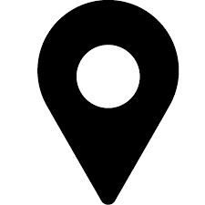

Name:Chris Jester-Young
Raleigh, NC, United States
Badges (737):33 Gold 319 Silver 385 Bronze
Details:I'm a New Zealander, and I speak and write in New Zealand English. If you'd like to edit my posts for spelling, please verify whether my spelling is correct in New Zealand; if so, I will likely revert your spelling "fix". In particular, in New Zealand, we use: -ise (e.g., optimise) and -yse (e.g., analyse) instead of -ize or -yze enrol, distil, and instil (with one l), and likewise enrolment and instalment (but install) colour, humour, glamour, and labour (with a u) when on its own, but without a u in some compound forms (humorous, glamorous, and laborious, but colourful) -t forms for the past tenses of some verbs, such as dreamt, learnt, leant, and spelt, much akin to slept, meant, lent, and spent manoeuvre, oestrogen, oesophagus, aesthetics, encyclopaedia, paediatrics, etc., where US English would use e- instead of ae- or oe- offence, defence, licence, practice (when used as noun); license, practise (when used as verb) manoeuvre, centre, metre, litre, mitre, etc., where US English would use -er instead of -re Macca's, where US English would use Mickey D's ;-) This list is not exhaustive. :-) All the code snippets I post on Stack Overflow are licensed under CC0, unless otherwise specified.† In short: Free as in free love. Reuse to your heart's content! :-D (This does not in any way contradict the site policy of licensing everything under CC-Wiki; it simply gives users even more freedom. In particular, you are not obliged to link back to SO when you use my code snippets.) † This additional CC0 licence applies to my code snippets on Stack Overflow only. It does not apply to other Stack Exchange sites that my profile might happen to get copied to. In particular, I do not grant this licence to my posts on Code Golf Stack Exchange.